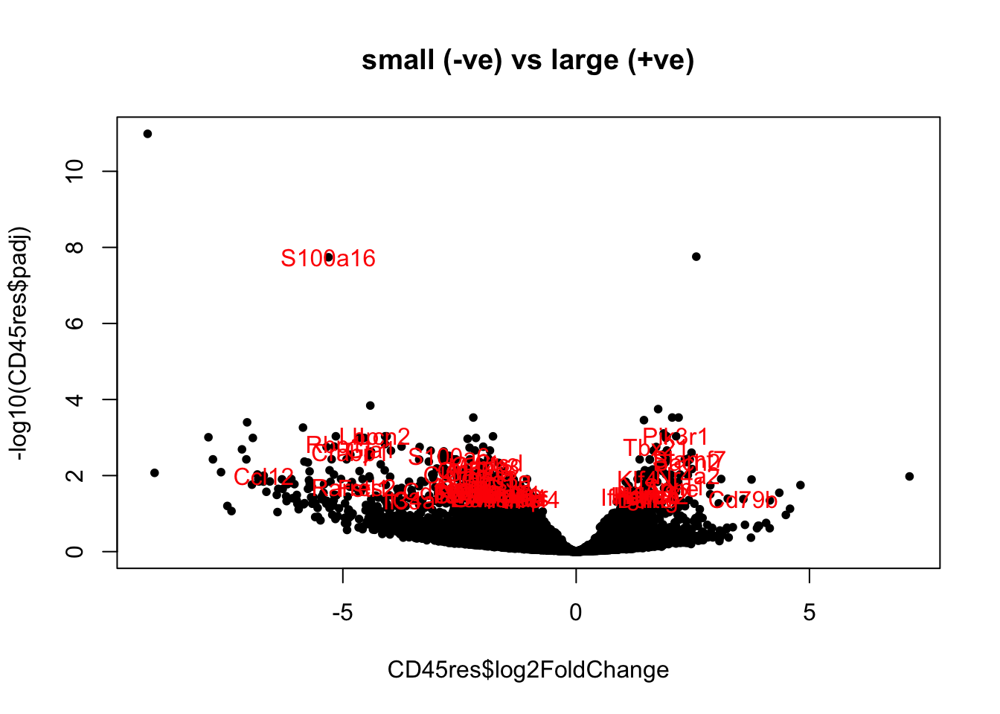
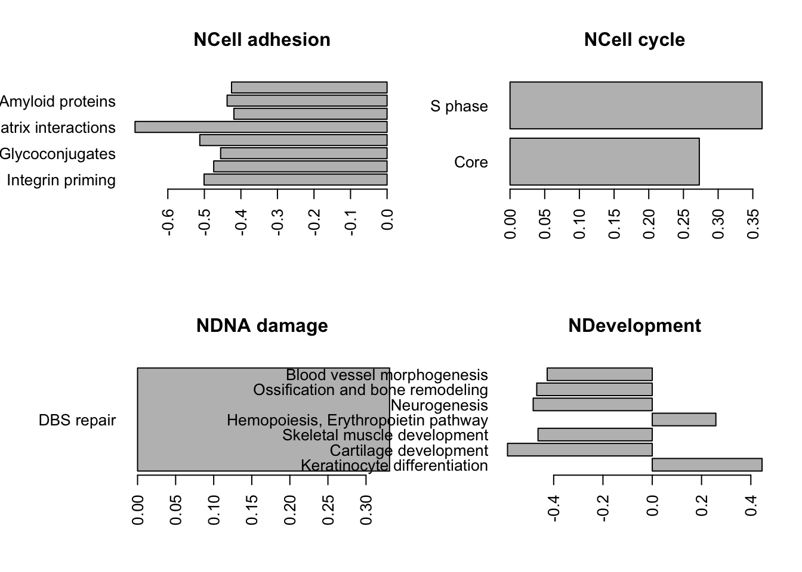

Chapter 17 DESeq analysis: Characterisation cohort (big vs small)
This document sets up DESeq runs to compare:
- CD45 samples
- Ep samples
according to size of the cohort samples
17.1 CD45 samples
In section 6.2, we have noticed that some DN samples had expression of epithelial markers. Here, we perform a differential gene expression analysis to find genes which are different between these two fractions.
Below is a summary of the number of differential genes, using p value cut off of 0.05 and log2 fold change of 1.5 and base expression of 100+.
infoTableFinal$TumSize=Cdata$Tumor.diameter.sac.mm[match(infoTableFinal$TumorID, Cdata$TumorID)]
infoTableFinal$SizeCat=factor(ifelse(infoTableFinal$Cohort=="Progression", ifelse(infoTableFinal$TumSize>X2a, "big", "small"), ifelse(infoTableFinal$TumSize>7, "big", "small")))
epidx=as.character(infoTableFinal$SampleID[which(infoTableFinal$Cohort!="Progression" & infoTableFinal$Fraction=="CD45" & !is.na(infoTableFinal$SizeCat))])
CD45ddsChar=DESeqDataSetFromMatrix(allstarFinal[ ,epidx], infoTableFinal[epidx, ], design=~(SizeCat)) ## change class
a1x=rowSums(counts(CD45ddsChar))
a1b=apply(counts(CD45ddsChar), 1, function(c) sum(c!=0))
sd1vals=mean(log10(a1x+1))-sd(log10(a1x+1))
keep=which(rowSums(counts(CD45ddsChar))>10^sd1vals)
keep2=which(apply(counts(CD45ddsChar), 1, function(c) sum(c!=0))> (ncol(CD45ddsChar)/2))
CD45ddsChar=CD45ddsChar[intersect(keep, keep2), ]
CD45ddsChar=DESeq(CD45ddsChar)
A1=results(CD45ddsChar)
#DT::datatable(as.data.frame(A1), rownames=F, class='cell-border stripe',
# extensions="Buttons", options=list(dom="Bfrtip", buttons=c('csv', 'excel'), #scrollX=T))17.1.1 PCA plot
First, have a look at the samples in a PCA plot: do they separate based on size:
vst1=vst(CD45ddsChar)
ax1=plotPCA(vst1, "TumSize")+theme_bw()+geom_text(aes(label=colnames(vst1)))+ggtitle("CD45 cells")+scale_color_manual(values=ColSize)
# nclude the control CD45 sample
vst1=vsd[, which(infoTableFinal$Fraction=="CD45" & infoTableFinal$Cohort!="Progression")]
vst1$SizeCat=infoTableFinal$SizeCat[match(colnames(vst1), infoTableFinal$SampleID)]
ax1=heatmap.2(cor((assay(vst1))), col=RdBu[11:1], trace="none", ColSideColors = ColSize[(vst1$SizeCat)])
Slightly re-order this to make sure the normal mammary gland is on the outside

Figure 17.1: correlation matrix of cd45 cells
rownames(t1)=infoTableFinal$TumorIDnew[match(rownames(t1), rownames(infoTableFinal))]
colnames(t1)=rownames(t1)
#write.csv(t1, file="nature-tables/Ext2d.csv")
#DT::datatable(t1, rownames=F, class='cell-border stripe',
# extensions="Buttons", options=list(dom="Bfrtip", buttons=c('csv', 'excel'), scrollX=T))17.1.2 Differential Gene Expression
Below are volcano plots of the differentially expressed genes with abs(log2change)>1.5, padj<0.05 and baseMean>100.
The first plot lists all differentially expressed genes, the second only lists those which are known to be immune related.
print('significant differential genes')
## [1] "significant differential genes"
# comment this back in if we want to change to big vs small
#CD45res=results(CD45ddsChar, contrast=c("SizeCat", "big", "small"))
# CD45res2=CD45res[which(CD45res$padj<0.05 & abs(CD45res$log2FoldChange)>1.5 &
# CD45res$baseMean>100), ]
# for continuous variable
CD45res=results(CD45ddsChar)
CD45res2=CD45res[which(CD45res$padj<0.05 & CD45res$baseMean>80 & abs(CD45res$log2FoldChange)>0.2), ]
#pdf("~/Desktop/DESeq-small-vs-largeCD45-characterisation.pdf", height=6, width=6)
namId=which(rownames(vsd)%in%RatAllImm & rownames(vsd)%in%rownames(CD45res2))
namIdN=rownames(vsd)[namId]
plot(CD45res$log2FoldChange, -log10(CD45res$padj), pch=20, col="black",
main="small (-ve) vs large (+ve)")
text(CD45res2$log2FoldChange, -log10(CD45res2$padj), rownames(CD45res2), col="red")
CD45res3=CD45res[match(namIdN, rownames(CD45res)), ]
plot(CD45res$log2FoldChange, -log10(CD45res$padj), pch=20, col="black",
main="small (-ve) vs large (+ve)")
text(CD45res3$log2FoldChange, -log10(CD45res3$padj), rownames(CD45res3), col="red")
DT::datatable(as.data.frame(CD45res2), rownames=F, class='cell-border stripe',
extensions="Buttons", options=list(dom="Bfrtip", buttons=c('csv', 'excel'), scrollX=T))We can also visualise this in a heatmap below, showing immune specific differentially expressed genes:
#HighExprGenes=rownames(CD45res2)[which(CD45res2$baseMean>100 & CD45res2$log2FoldChange<0) ]
colSide=CD45ddsChar$SizeCat
t2=assay(vsd)[namId, match(colnames(CD45ddsChar), colnames(vsd))]
colnames(t2)=infoTableFinal$TumorIDnew[match(colnames(t2), rownames(infoTableFinal))]
heatmap.2(t2, trace="none", col=RdBu[11:1], ColSideColors = palette()[colSide], scale="row", main="immune genes DEG")
Figure 17.2: Differential CD45 genes big vs small
17.1.3 GSEA
Run GSEA. Here, we will look specifically at the Process Network pathways which are enriched, focusing specifically on immune related terms
cd45Genes=rownames(CD45res)
l1=SymHum2Rat$HGNC.symbol[match(cd45Genes, SymHum2Rat$RGD.symbol)]
l2=Rat2Hum$HGNC.symbol[match(cd45Genes, Rat2Hum$RGD.symbol)]
l3=Mouse2Hum$HGNC.symbol[match(cd45Genes, Mouse2Hum$MGI.symbol)]
cd45GenesConv=ifelse(is.na(l1)==F, l1, ifelse(is.na(l2)==F, l2, ifelse(is.na(l3)==F, l3, cd45Genes)))
hits=cd45GenesConv[match(rownames(CD45res2), cd45Genes)]
#hits=epGenesConv[match(hits, rownames(Epdds))]
fcTab=CD45res$log2FoldChange
names(fcTab)=cd45GenesConv
gscacd=GSCA(listOfGeneSetCollections=ListGSC,geneList=fcTab, hits = hits)
gscacd <- preprocess(gscacd, species="Hs", initialIDs="SYMBOL",
keepMultipleMappings=TRUE, duplicateRemoverMethod="max",
orderAbsValue=FALSE)
gscacd <- analyze(gscacd,
para=list(pValueCutoff=0.05, pAdjustMethod="BH",
nPermutations=100, minGeneSetSize=5,
exponent=1),
doGSOA = F)
A1=HTSanalyzeR2::summarize(gscacd)
PNresults=gscacd@result$GSEA.results$ProcessNetworks
Ax1=which(PNresults$Adjusted.Pvalue<0.1)
Lx1=PNresults[Ax1, 1:2]
Lx1$Group=sapply(strsplit(rownames(Lx1), "_"), function(x) x[1])
Lx1$Process=sapply(strsplit(rownames(Lx1), "_"), function(x) x[2])
## replace certain groups
Lx1$Group[grep("ymphocyte", Lx1$Process)]="NImmune response"
# plot for inflammation, immune response, cell adhesion, transcription?
TestGrp=c("NInflammation", "NCell adhesion", "NImmune response", "NTranscription")
#pdf("~/Desktop/2E-process-networks-significant-pathways.pdf", width=6, height=6)
# par(mfrow=c(2,2), oma=c(0, 2, 0, 0))
#
# for (i in TestGrp){
# x1=which(Lx1$Group==i)
# barplot(Lx1$Observed.score[x1], names.arg = Lx1$Process[x1], horiz = T, las=2,
# main=i)
# }
par(oma=c(0, 10, 0, 0))
barplot(Lx1$Observed.score, names.arg = ifelse(is.na(Lx1$Process), Lx1$Group, Lx1$Process), horiz = T, las=2)
Figure 17.3: gsea for cd45 samples
#dev.off()
write.csv(gscacd@result$GSEA.results$ProcessNetworks, file="nature-tables/Supp_3_cd45_big_small.csv")
write.csv(Lx1, file="nature-tables/2e.csv")In the following hairball, we can look at all the terms
TermsA=sapply(strsplit(rownames(gscacd@result$GSEA.results$ProcessNetworks), "_"), function(x) x[2])
TermsA[which(is.na(TermsA))]=substr(rownames(gscacd@result$GSEA.results$ProcessNetworks)[which(is.na(TermsA))], 2, 50)
## check whether this runs:
gscacd@result$GSEA.results$ProcessNetworks$Gene.Set.Term=TermsA
viewEnrichMap(gscacd, gscs=c("ProcessNetworks"),
allSig = TRUE, gsNameType="term")Figure 17.4: gsea hairball for all cd45 samples
17.2 Epithelial samples
infoTableFinal$TumSize=Cdata$Tumor.diameter.sac.mm[match(infoTableFinal$TumorID, Cdata$TumorID)]
#infoTableFinal$SizeCat=factor(ifelse(infoTableFinal$Cohort=="Progression", ifelse(infoTableFinal$TumSize>X2a, "big", "small"), ifelse(infoTableFinal$TumSize>X1a, "big", "small")))
epidx=as.character(infoTableFinal$SampleID[which(infoTableFinal$Cohort!="Progression" & infoTableFinal$Fraction=="Ep" & !is.na(infoTableFinal$SizeCat))])
EpddsChar=DESeqDataSetFromMatrix(allstarFinal[ ,epidx], infoTableFinal[epidx, ], design=~(SizeCat)) ## change class
a1x=rowSums(counts(EpddsChar))
a1b=apply(counts(EpddsChar), 1, function(c) sum(c!=0))
# par(mfrow=c(1,2))
# hist(log10(a1x+1), main="log10 total counts")
# hist((a1b+1), main="Non-zero entries")
sd1vals=mean(log10(a1x+1))-sd(log10(a1x+1))
keep=which(rowSums(counts(EpddsChar))>10^sd1vals)
keep2=which(apply(counts(EpddsChar), 1, function(c) sum(c!=0))> (ncol(EpddsChar)/2))
EpddsChar=EpddsChar[intersect(keep, keep2), ]
EpddsChar=DESeq(EpddsChar)17.2.1 PCA plot
First, have a look at the samples in a PCA plot: do they separate based on size:
#pdf("~/Desktop/S1CD-Ep-characterisation-PCA-outcome.pdf", width=6, height=6)
vst1=vst(EpddsChar)
plotPCA(vst1, "SizeCat")+theme_bw()+geom_text(aes(label=colnames(vst1)))+ggtitle("Ep cells")+scale_color_manual(values=ColSize)
Figure 17.5: PCA plot of epithelial samples
And the plot of how much samples correlate with each other
ax1=heatmap.2(cor((assay(vst1))), col=RdBu[11:1], trace="none", ColSideColors = ColSize[(vst1$SizeCat)])
Figure 17.6: correlation plot epithelial samples
Here is a volcano plot the significant differential genes showing the difference between big and small tumors in the Ep fraction:
Epres=results(EpddsChar)#, contrast=c("SizeCat", "big", "small"))
Epres2=Epres[which(Epres$padj<0.05 & abs(Epres$log2FoldChange)>0.25 &
Epres$baseMean>80), ]
plot(Epres$log2FoldChange, -log10(Epres$padj), pch=20, col="black",
main="small (-ve) vs large (+ve)")
text(Epres2$log2FoldChange, -log10(Epres2$padj), rownames(Epres2), col="red")Figure 17.7: Ep DEG big-small
And the accompanying heatmap:
colSide=EpddsChar$SizeCat
t2=assay(vsd)[which( rownames(vsd)%in%rownames(Epres2)), match(colnames(EpddsChar), colnames(vsd))]
a1=heatmap.2(t2, trace="none", col=RdBu[11:1], ColSideColors = palette()[colSide], scale="row", main="all DEG")
Figure 17.8: heatmap of big vs small
boxplot(assay(vsd)["Creb1", match(colnames(EpddsChar), colnames(vsd))]~EpddsChar$SizeCat,
main="Creb1 gene small vs big vst expression")
Figure 17.9: heatmap of big vs small
17.2.2 GSEA
Run GSEA. Here, we will look specifically at the Process Network pathways which are enriched
EpGenes=rownames(Epres)
l1=SymHum2Rat$HGNC.symbol[match(EpGenes, SymHum2Rat$RGD.symbol)]
l2=Rat2Hum$HGNC.symbol[match(EpGenes, Rat2Hum$RGD.symbol)]
l3=Mouse2Hum$HGNC.symbol[match(EpGenes, Mouse2Hum$MGI.symbol)]
EpGenesConv=ifelse(is.na(l1)==F, l1, ifelse(is.na(l2)==F, l2, ifelse(is.na(l3)==F, l3, EpGenes)))
hits=EpGenesConv[match(rownames(Epres2), EpGenes)]
#hits=epGenesConv[match(hits, rownames(Epdds))]
fcTab=Epres$log2FoldChange
names(fcTab)=EpGenesConv
gscaep=GSCA(listOfGeneSetCollections=ListGSC,geneList=fcTab, hits = hits)
gscaep <- preprocess(gscaep, species="Hs", initialIDs="SYMBOL",
keepMultipleMappings=TRUE, duplicateRemoverMethod="max",
orderAbsValue=FALSE)
gscaep <- analyze(gscaep,
para=list(pValueCutoff=0.05, pAdjustMethod="BH",
nPermutations=100, minGeneSetSize=5,
exponent=1),
doGSOA = F)
A1=HTSanalyzeR2::summarize(gscaep)
save(gscaep, file="figure-outputs/1h.Rdata")
TermsA=sapply(strsplit(rownames(gscaep@result$GSEA.results$ProcessNetworks), "_"), function(x) x[2])
TermsA[which(is.na(TermsA))]=substr(rownames(gscaep@result$GSEA.results$ProcessNetworks)[which(is.na(TermsA))], 2, 50)
## check whether this runs:
gscaep@result$GSEA.results$ProcessNetworks$Gene.Set.Term=TermsA
viewEnrichMap(gscaep, gscs=c("ProcessNetworks"),
allSig = TRUE, gsNameType="term")
write.csv(gscaep@result$GSEA.results$ProcessNetworks, file="nature-tables/Supp_2_B_GSEA.csv")We can also look at the results using barplots, as shown below
PNresultse=gscaep@result$GSEA.results$ProcessNetworks
Ax1=which(PNresultse$Adjusted.Pvalue<0.1)
Lx1=PNresultse[Ax1, 1:2]
Lx1$Group=sapply(strsplit(rownames(Lx1), "_"), function(x) x[1])
Lx1$Process=sapply(strsplit(rownames(Lx1), "_"), function(x) x[2])
## replace certain groups
Lx1$Group[grep("ymphocyte", Lx1$Process)]="NInflammation"
Lx1$Group[which(Lx1$Group=="NImmune response")]="NInflammation"
# plot for inflammation, immune response, cell adhesion, transcription?
TestGrp=c("NCell adhesion","NCell cycle","NDNA damage", "NDevelopment", "NTranscription", "NInflammation")
#pdf("~/Desktop/1E-process-networks-significant-pathways_ep.pdf", width=6, height=6)
par(mfrow=c(2,2), oma=c(0, 3, 0, 0))
for (i in TestGrp){
x1=which(Lx1$Group==i)
barplot(Lx1$Observed.score[x1], names.arg = Lx1$Process[x1], horiz = T, las=2,
main=i)
}
#dev.off()
write.csv(Lx1, file="nature-tables/1h.csv")
# match the genes in the Tgfb pathway
Genes1=PathwayMapAllComp$`Cell adhesion_Leucocyte chemotaxis`
mid=match(Genes1, toupper(rownames(vst1)))
heatmap.2(assay(vst1)[na.omit(mid), ], col=RdBu[11:1], ColSideColors = ColSize[vst1$SizeCat],
trace="none", scale="row")

Double check the above result by running a ssGSEA and checking the directionality
Mx1=assay(vst1)
rownames(Mx1)=toupper(rownames(Mx1))
testOut=gsva(Mx1, PathwayMapAllComp,method="ssgsea", kcdf="Gaussian", ssgsea.norm=T)
boxplot(testOut["Cell cycle_S phase", ]~vst1$SizeCat)

17.2.3 Check expression of checkpoint proteins
#pdf("figure-outputs/Supp2_checkpoint.pdf", height=5, width=5)
ImmSuppAPCRat=sapply(ImmSuppAPC, function(x) na.omit(SymHum2Rat$RGD.symbol[match(x, SymHum2Rat$HGNC.symbol)]))
vstB=assay(vst1)[match(unlist(ImmSuppAPCRat), rownames(vst1)), ]
ColSideCols=rep(c("red", "blue", "purple"), times=sapply(ImmSuppAPCRat, length))
rmx=which(is.na(vstB[ ,1]))
heatmap.2(vstB[-rmx, ], col=RdBu[11:1], scale="none", trace="none",
RowSideColors = ColSideCols[-rmx], hclustfun = hclust.ave)
Figure 17.10: checkpoint proteins expressed in epithelial samples
## Also do this using TPM values
valuesB=allTPMFinal[ match(unlist(ImmSuppAPCRat), rownames(allTPMFinal)), match(colnames(vstB), colnames(allTPMFinal))]
colnames(valuesB)=infoTableFinal$TumorIDnew[match(colnames(valuesB), rownames(infoTableFinal))]
heatmap.2(log10(valuesB[ -rmx, ]+1), col=RdBu[11:1], scale="none", trace="none",
RowSideColors = ColSideCols[-rmx], hclustfun = hclust.ave)
Figure 17.11: checkpoint proteins expressed in epithelial samples
#dev.off()
DT::datatable(as.data.frame(valuesB), rownames=T, class='cell-border stripe',
extensions="Buttons", options=list(dom="Bfrtip", buttons=c('csv', 'excel'), scrollX=T))Figure 17.12: checkpoint proteins expressed in epithelial samples
Write the tables to file